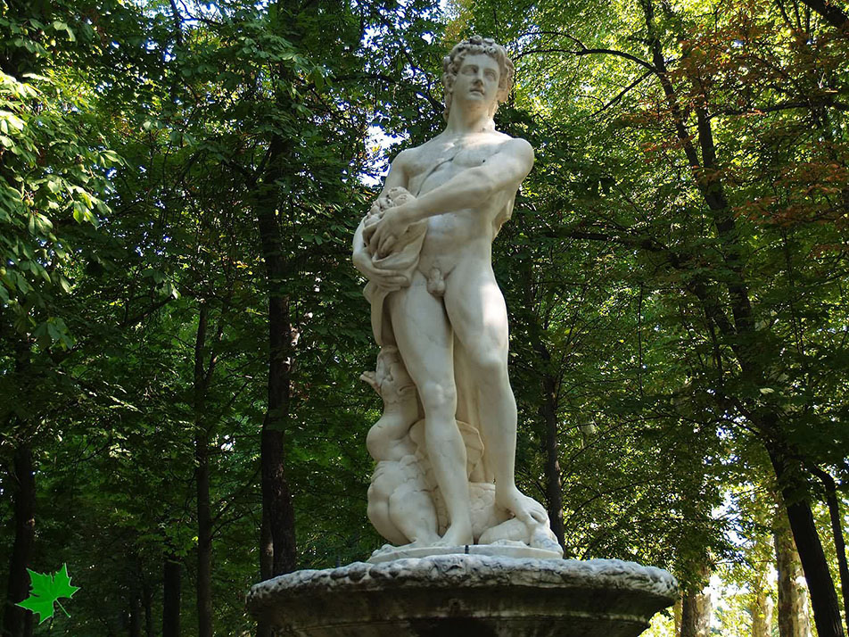

Apolo era el Dios de la germinación y de la madurez de los frutos, poseía el don de adoptar la forma que deseara. Esta fuente puede simbolizar la riqueza de la huerta de Aranjuez

La Fuente de Apolo es del siglo XVI, está situada cerca de la Fuente de Hércules. Está fabricada con marmol. En el centro está Apolo puesto sobre un dragón.
La plazoleta en la que se encuentra esta fuente se llamaba la Puerta del Sol de Aranjuez, haciendo referencia a la Plaza del Sol de Madrid.